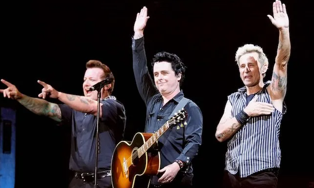

Green Day has announced their new album titled "Saviors"
Influential rock band Green Day has just announced their 14th studio album titled "Saviors". This comes four years after their previous release "Father of All..."
|  |
Green Day headlining Shaky Knees music festival 2022 in Atlanta Georgia.
|
Green Day got their start all the way back in 1989 with their debut EP "1,000 Hours". Since then they have established themselves as one of the faces of Pop Punk with releases such as "Dookie" and "American Idiot".
 |
A$AP Rocky and Rhianna in the Fashion Killa music video. At nearly 100 million views on youtube, it is the duos most notable work to date.
|
After mostly negative reviews on "Father of All...", the bands future has been uncertain. Fans were left doubtful in the bands capabilities, and its been complete silence from the band since then. With the announcing of their new album, two singles titled "The American Dream Is Killing Me" and "Look Ma, No Brains!" have been released. Reception of the two singles have been mostly positive as fans have noted the significant improvement over their previous work.
Does Green Day still have it in them? Or will they ultimately prove that the bands best days are behind them? Saviors is expected to release in January 2024, so stay tuned until then!